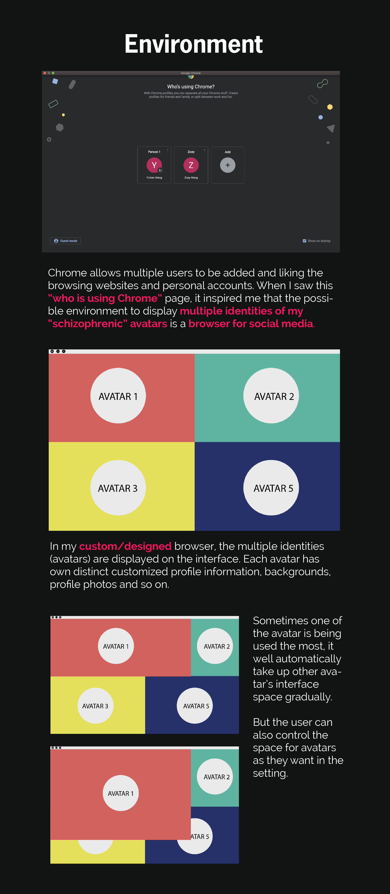
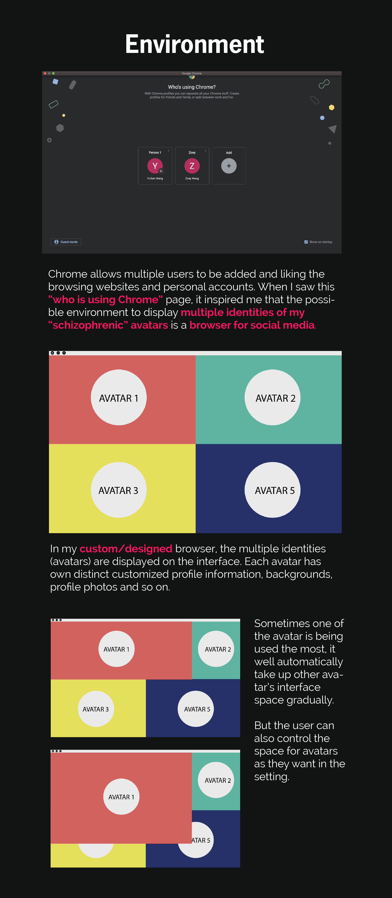
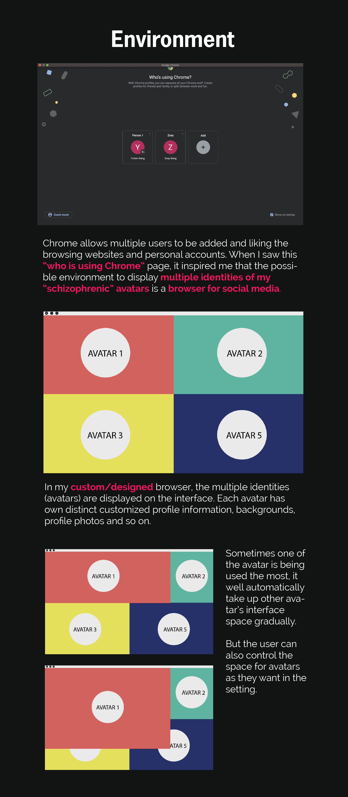

The conceptual origin of my avatars, "Schizophrenia", came from the inspiration of my multiple identities on the Internet. Looking back at my experience in the Internet world, I always play different roles by having multiple accounts for different platforms. Some accounts only show a part of my real personality or characteristic while others pretend or fake an ideal identity. For example, I have 3 Instagram accounts: one for posting personal life and photos, one for showing my artworks, and one for only following others not posting anything. Similarly, I also have multiple accounts for different uses and purposes for other social media or communication platforms like Weibo, WeChat, and Discord. Therefore, I chose four characters to represent my multiple identities online, which become alive and talking and chatting to one another, showing both the psychological state and visual elements of my online experience.
I'm gonna eat a 6-inch pizza. I'm gonna eat a 9-inch pizza.I'm gonna eat a 12-inch pizza.I'm gonna eat a slice of pizza.I'm gonna eat a 6-inch pizza. I'm gonna eat a 9-inch pizza.I'm gonna eat a 12-inch pizza.I'm gonna eat a slice of pizza.I'm gonna eat a 6-inch pizza. I'm gonna eat a 9-inch pizza.I'm gonna eat a 12-inch pizza.I'm gonna eat a slice of pizza.I'm gonna eat a 6-inch pizza. I'm gonna eat a 9-inch pizza.I'm gonna eat a 12-inch pizza.I'm gonna eat a slice of pizza.
Good Morning! Wake up. It's so early, back to sleep! Sleeping...Good Morning! Wake up. It's so early, back to sleep! Sleeping...Good Morning! Wake up. It's so early, back to sleep! Sleeping...Good Morning! Wake up. It's so early, back to sleep! Sleeping...Good Morning! Wake up. It's so early, back to sleep! Sleeping...Good Morning! Wake up. It's so early, back to sleep! Sleeping...
I am gratified for my project at the end. However, the process was really difficult. I had a hard time deciding how to show my "multiple identities". At first, I just used color blocks to represent my identities, which was unclear, so I came to actually design out my avatars. Give them names and appearance, so the concept of identities would be clarified. I learned not only from how to new skills in coding but also the inspirations and thoughts from my classmates. I am surprised at the end of what I can do since I am very poor at coding.
